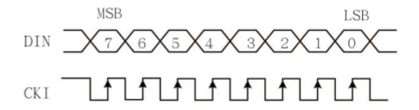
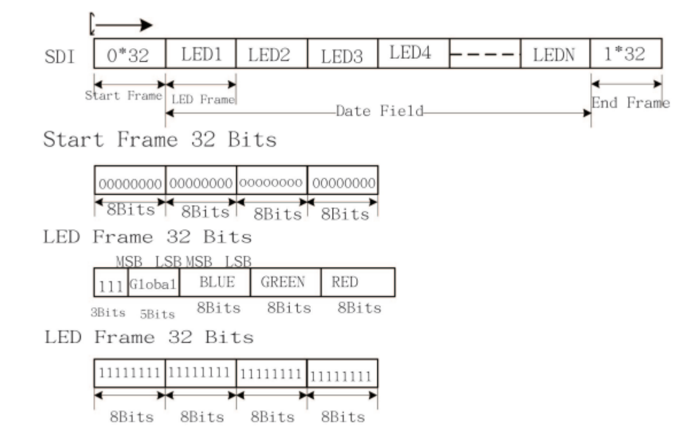

MCU Design
Overview
The role of the MCU in this project was to carry out all of the chess logic and drive the lights based on the current state of the game. After setting up the required peripherals and allocating the required variables, the main loop of the MCU code would receive the board data via SPI and then check to see if anything changed. If a piece was picked up, the MCU would light the next moves of that piece. If a piece was put down, the MCU would stop lighting the squares it was previously lighting and then carry out the calculations to update the game state data based on the move.
Interface with the LED Strip
While we used the APA101 LED’s strip for individually addressable LED’s the only data sheet we could find was the APA102C the newer generation of the same LED. WHile this already was not good news the data sheet did not provide much information.

The image above was the only data on the protocol. From the physical hardware we knew that there were four pins. Vcc, GND, CLK, and SDI. From the image above we can see that a CLK must be sent into the LED’s where it will read the SDI data on the reading it on the rising edge and allowign it to change on the falling edge. The format of the data was given by the image below.

The LED strip takes in frames of 32 bit data. It must first begin with a start frame and then LED frames can be sent in with the first coding the first LED and every subsequent frame coding another LED. In the LED frame the first 3 bits need to be high, the next 5 bits control the brightness, and the last 24 bits determine the balance of RGB it will have. For instance if you wanted a really bright green light the LED frame would be 32’b1111111000000001111111100000000 or an LED with no light would be 32’b11100000000000000000000000000000.
Many libraries exist specifically to control these types of LED’s but for our project we decided to bitbang the protocol. To bitbang the CLK and DATA we set both to be GPIO output pins. We first set CLK to be low while changing DATA to the first bit we then delayed for a giving amount and changed CLK to high and waiting the same amount of time until the process repeated for all 32 bits in a frame or all 2080 bits in the lighting of 64 LEDS.
The timing the strip required was not specific, just that the clock signal was symmetrical (50% duty cycle). When lighting the whole board, the MCU would start by sending start frame and then would then light each LED in the strip its desired color. In the design, blue was used as the color to signify a square. Green was used to highlight the squares a piece could move to when it was picked up. And red was used when a check occurred, lighting up the King’s square, or when checkmate occurred, lighting up the whole board in red.
Interface with the FPGA
The MCU served as the controller for communication with the FPGA via SPI protocol. The FPGA would capture a board state, and once a complete board state was ready for transfer to the MCU the FPGA would assert a done signal. Once this signal was asserted, the MCU would start carrying out the SPI transactions to receive the updated state. The MCU received each row of the board as a char, and stored each row in an array of 8 chars. Once the entire board state was captured, the MCU would assert a load signal in order to enable the FPGA to capture another board state. The MCU would then go through the captured state to check for updates and carry out lighting the LEDS or doing calculations if necessary.
Chess Logic Variables
The MCU made use of an array of 64 booleans to represent the occupation status of the board and an array of structs to represent all of the pieces. The board array showed the current occupation status of the board, with a 1 meaning that square is occupied and a 0 meaning empty. The struct that was used to keep track of the pieces included the pieces type, color, current position, and a boolean for if the piece was protected or not. A protected piece is a piece where another piece of the same color is attacking the square that the protected piece is occupying. The struct for a piece also included an array of the pieces next possible moves, stored as a coordinate of the row and column for squares that the piece can move to. The MCU also had two arrays similar to the board array that were used to keep track of the squares in which white pieces were attacking, and another for the squares that black pieces were attacking. These arrays were used in order to calculate the squares which the king piece could move to.
Game Initialization
When a new game is started, the board array gets filled according to the starting position of a chess game, which is rows 1, 2, 7, and 8 being filled and the rest empty. This array could then be referenced as new board states come in to see if a change occurred and updated if necessary. The pieces array gets filled with each piece getting its starting position and no next moves, with the exceptions of the pawns and knights which get filled with their initial available moves. This array was then updated after each move to reflect the position change of the piece that moved, and to reflect the change in next available moves for pieces.
Updating Chess Variables
When a new board state was received from the FPGA, the MCU would go through the new board state to see if anything changed and make any necessary updates. The MCU would receive 8 chars from the FPGA, so it would first have to convert this into booleans. The MCU went through one row of the board at a time, and would first convert char representing the row into an array of 8 booleans. The FPGA would send chars where a 1 bit represented an empty square and a 0 bit represented an occupied square, so the bits would have to be flipped before going through them. Once the char was correctly transformed into the array of 8 booleans, the MCU would then go through the row to see if a change occurred. If no change occurred, it would go onto the next row. If a change occurred, then the MCU would have a struct that housed the necessary information of the update. This struct contained a pointer to the piece that created the update and variable to signify if the update was a piece being picked up or put down.
When a piece was picked up, the MCU would first clear the lights array. It would then go through the picked up pieces next available moves and set those squares to one in the lights array. It would then light the lights according to the light array, with 0’s in the array being lit blue and 1’s being lit green. The MCU would hold the last update that occurred along with the current update as if two pick ups occurred in a row, then a piece was captured. This is because the piece that was doing the capturing is picked up, then the piece being captured is picked up, and then the piece doing the capturing is put down on the square of the piece that is captured. Thus, when a second pick up happened in a row, the captured piece’s position was set to (-1, -1) so that it was no longer on the board, and the piece from the first update was saved into the update so that its position could be updated when it was put down.
When a piece was put down, the MCU would first reset all of the lights to blue. It would then set all the lights to green to signify that calculations were occurring. The MCU would then go through all of the calculations to update the pieces array. It would check to see if a pawn promotion occurred, which occurs when a pawn reaches the opposing side of the board. For a pawn promotion, it was assumed the pawn would promote to a queen only as the individuals with the knowledge of when it is useful to under-promote to a knight were not our target audience. The MCU then would calculate the next moves for each piece, with the update of the piece being put down’s new position taken into account. Before doing this the MCU cleared both arrays representing the attacked squares so that they could be accurately updated during the piece calculations. Because the king moves are based on what squares the other pieces are attacking, the MCU would calculate the moves for both kings after calculating the moves for the other pieces. When calculating the king’s moves, the MCU could use the attacked squares array to check if the empty squares were available to move into, and would use the protected variable of the piece struck to check if opposing pieces could be captured. The MCU would then check to see if the king of the apposing color of the piece that was put down is in check. It would do this by going through all of next moves of the pieces of the color that was put down, and see if any piece has a next move to the king square. If the king was in check, then the MCU would check to see if the king was in checkmate. Because of how the king moves were calculated, this check would only have to check if the king had any available moves to make, and if it did not then it was checkmate. The arrays that represented the squares either color was attacking allowed for the king next moves calculation to take into account the attacked squares, so if no moves were available then it would be checkmate.